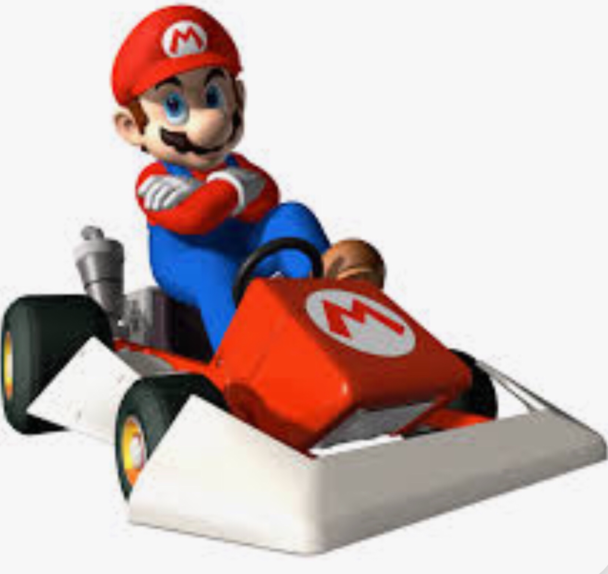

Mario Kart is a game series created by Nintendo.
The first game was released in 1992 for the
Super Nintendo Entertainment System (game console). 
This website is specifically about Mario Kart for the Nintendo DS
game console released in 2005.
To play the game, the player must select a game mode. The player then must select from a list of characters and their vehicle. Each character has a variety of different vehicles. The player can then choose what course they would like to race. Here are the different game modes to choose from.
Every game mode has different objectives and rules how to play. The general game mode, Grand Prix , is played by racing 8 other players (computers or friends) in different courses and trying to get 1st place.
Mario Kart has developed and expanded thoughout the last 32 years. The game series has traveled through multiple different gaming systems and consoles that has become accessable to many players.
In today's time, 19 years after the release of Mario Kart for the DS console, the game continues to live on through a now different and more recent console, named the Nintendo Switch. The recent version of the game is titled,
Mario Kart 8.
The development of the game series has allowed many different players to play various different versions of the game through different platforms.
This game series has allowed for players to connect with others and play a fun game. Through the development and improvements of technology and gaming systems, playing single player or with others is frequently used and highly enjoyed!